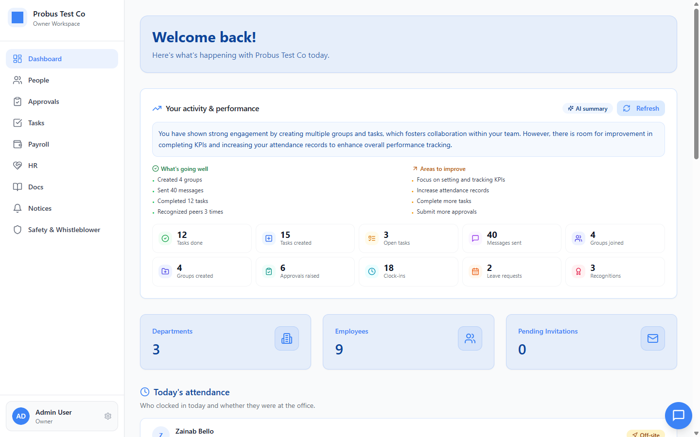
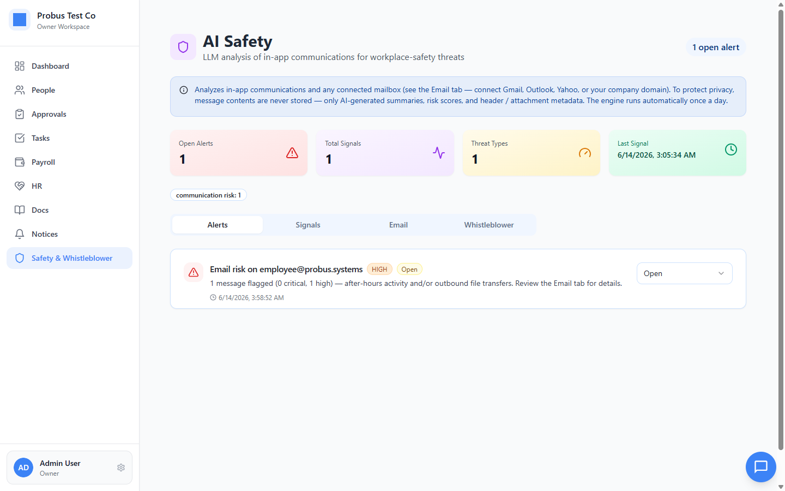
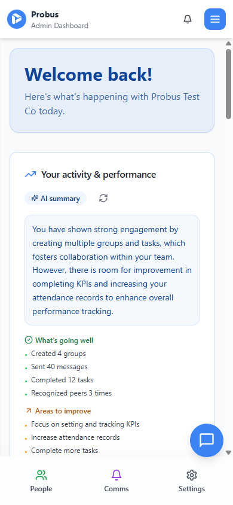
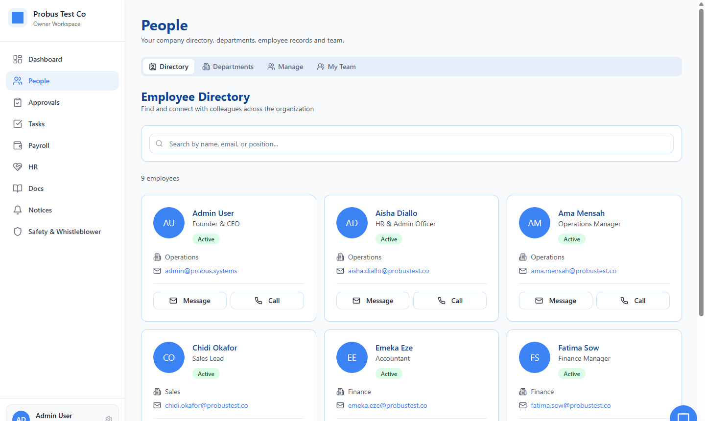
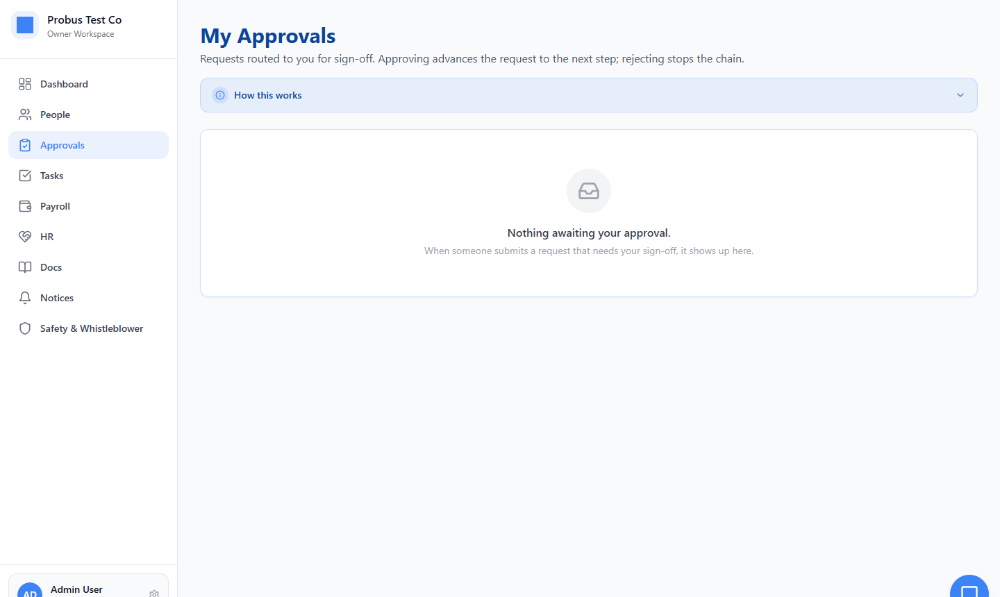
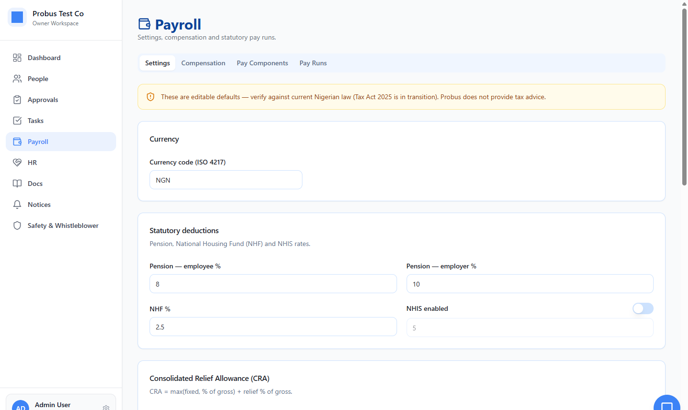
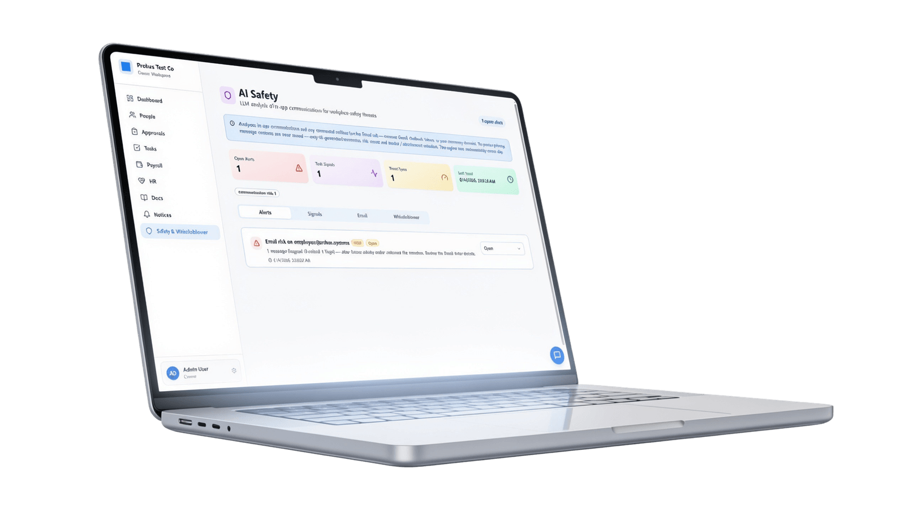

Product Management · 2026
Probus
An AI-powered HR & workforce platform for African SMEs - attendance, payroll, approvals and team safety in one role-aware workspace.
As product manager I built the working MVP with AI and refined every user flow with it - from the role-based portals to the AI safety layer.

Overview
Run HR on a dozen spreadsheets and three chat apps, and something always slips through. Probus is the calm alternative - one role-aware workspace where attendance, payroll, approvals and team safety finally live in the same place.
Owners, HR and managers share one Company workspace; employees get a focused app of their own. An AI co-pilot reads the day's raw activity and hands it back as a plain-language performance summary - then quietly watches in-app chatter for safety risks, keeping the signal and never the message itself. I owned it end to end: built the MVP with AI, and refined every flow until a dense HR system felt genuinely light.
The product
One workspace,
every role.
The same calm, pastel-blue system scales from a nine-area admin workspace to a pocket-sized employee app.


Features
Built around the work, not the org chart.
A workspace that briefs you
The owner lands on an AI-written summary - what's going well, what to improve - above live counters for tasks, approvals, clock-ins and recognitions.

The whole company, one directory
Search people by name, role or department; jump to records, departments and your team - with message and call one tap away on every card.

Approval chains you design once
Requests route to the right people for sign-off - approving advances to the next step, rejecting stops the chain. No more email threads.

A payroll engine for local law
A table-driven, fully editable tax engine - currency, pension, NHF, CRA - seeded for Nigeria and honest about it: "verify against current law."
A co-pilot that watches for risk
An LLM reads in-app communication for threats - after-hours transfers, unusual urgency - and surfaces scored alerts. It keeps only the signal, never the message.
Experience highlights
The decisions behind the calm.
Role-gated complexity
Four portals mean each person sees only the tools they need - heavy HR machinery, made to feel light.
AI as a narrator
Raw activity is rewritten into a plain-language summary, so insight doesn't require reading a chart.
Privacy-first by design
Safety monitoring stores only signals and metadata - message contents are never kept.
A calm visual language
Soft pastel-blue surfaces, generous spacing and quiet cards keep a dense product approachable.
Fast paths for power users
A command palette and a floating chat live on every page, so nothing is more than a keystroke away.
Isolation in the database
Row-level security separates every company's data - enforced on the backend, not just the UI.
Problem · Process · Craft
Three years, one calm workspace.
African SMEs run people operations across spreadsheets, chat groups and memory - so things slip: a missed clock-in, an unpaid advance, an unanswered complaint. Probus set out to put all of it in one role-aware place, and make a dense HR system feel genuinely light.
Research the problem
I started with research and a survey into how SMEs really run people operations day to day - and exactly where it breaks down.
Name it, architect it
The first cut was even called “Integrity Merit” - too cliché and hard to recall - so it became the memorable “Probus”. Then I defined four role-based portals and nine modules, so each person sees only the tools they need.
Build the MVP with AI
I built the working product with AI - dashboards, a payroll engine, approval chains - then layered in an AI co-pilot that narrates performance and an AI safety watch that keeps the signal, never the message.
Two versions, now in beta
At least two full versions and nearly three years of iterating on real flows - tightening the experience, hardening data isolation and tuning the AI. It's now in beta testing.
The result
A serious HR platform that never feels heavy.
Probus ships as a complete, deployed product - owners run people operations end to end, employees self-serve from any device, and an AI layer adds insight and safety without adding noise.
Explore the live product arrow_forward